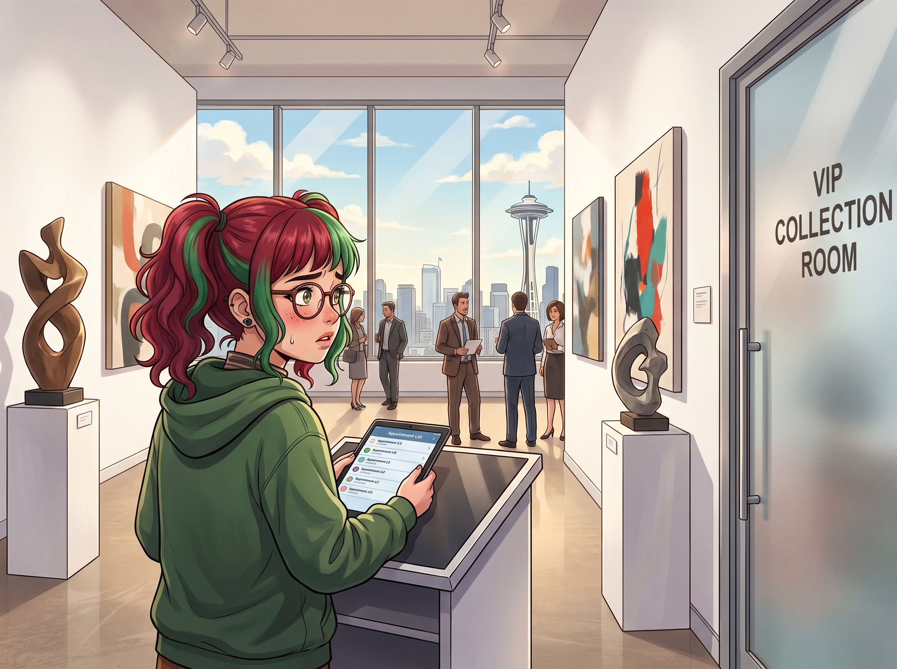
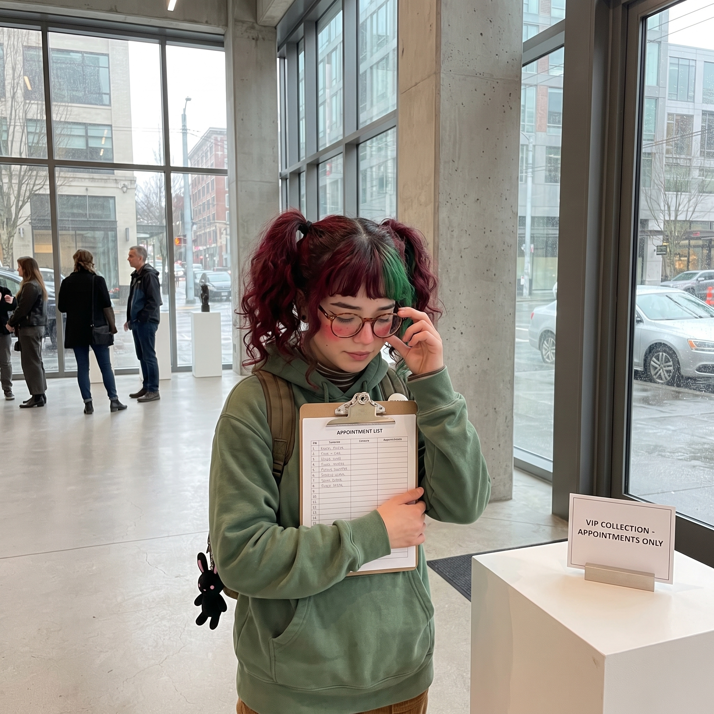

畫廊危機（倒敘）


十二月的波特蘭，Victoria 位於珍珠區的高端當代藝術畫廊迎來了年度最重要的冬季特展。
二號車廂的小分隊全員出動。Victoria 穿著一身剪裁凌厲的高定晚禮服在場內應酬；Max 拿著相機在角落紀錄；Chloe 穿著一套勉強算正式的黑色西裝，正無聊地靠在自助餐檯旁狂吃免費的高級魚子醬塔；而 Kate 則優雅地端著無酒精香檳，微笑著拒絕搭訕者。
至於實習生 Lily，被安排在 VIP 藏品室的門口，負責核對預約名單。
一、危機降臨：傲慢的闖入者
晚上九點，危機爆發了。
波特蘭藝術圈一位臭名昭著、極度傲慢且喜歡性別說教的中年男性藝評人，Richard Vance，帶著幾分醉意，搖搖晃晃地走向了 VIP 藏品室。他沒有預約，卻粗暴地推開了安保人員，徑直來到 Lily 面前。
「小女孩，讓開。」Richard 噴著濃烈的威士忌酒氣，用肥胖的手指戳著 Lily 面前的簽到台，「我是《俄勒岡藝術週刊》的首席評論員。我要進去看看 Victoria Chase 藏了什麼見不得人的垃圾。如果她不讓我進去，我明天就能讓這家畫廊的風評掉進下水道！」
說著，他伸出手，準備強行去擰藏品室那扇厚重的黃銅大門的把手。
遠處的 Victoria 看到了這一幕，臉色瞬間鐵青，踩著高跟鞋就要衝過來。Chloe 也已經放下了手裡的餐盤，捏得指關節喀喀作響。
但她們都晚了一步。
二、究極融合：天使的臉龐，惡魔的手段
Lily 站在原地。如果是在幾個月前，她現在應該已經嚇得瑟瑟發抖、連連道歉了。
但此刻，她深吸了一口氣，大腦裡迅速閃過二號車廂那幾位導師的臉。
她沒有退後，而是往前邁了一小步，精準地擋在了 Richard 和門把手之間。
【第一步：發動 Kate 的聖母領域】
Lily 雙手交握在胸前，微微歪著頭，臉上綻放出一個如同 Kate Marsh 本尊降臨般的、純潔無瑕且充滿哀傷與憐憫的微笑。
「先生，請您不要這麼激動。」Lily 的聲音溫柔得能滴出水來，甚至帶著一絲心疼的顫音，「您的呼吸頻率太快了，這樣對您的心血管系統真的非常不好。」
Richard 愣住了。他習慣了安保人員的強硬或者服務人員的恐慌，卻沒見過這種彷彿在教堂裡對他進行心靈洗滌的關懷。
【第二步：疊加 Victoria 的階級斷頭台】
就在 Richard 愣神的一秒鐘裡，Lily 的目光極其自然地向下，精準地鎖定了 Richard 腳上那雙鞋底有些磨損、款式老舊的皮鞋。隨後，她微微揚起下巴，眉毛以上帝般悲憫的十五度角挑起。
「我完全理解您的焦慮，Vance 先生。」Lily 用最溫柔的語氣，吐出了最淬毒的台詞，「畢竟，對於一個常年靠寫些嘩眾取寵的專欄來勉強維持生計、甚至連一雙稍微體面的純手工牛皮鞋都買不起的人來說……無法親眼看到這些您幾輩子都買不起的藝術品，確實是一種巨大的精神折磨。您辛苦了。」
這段話的殺傷力，不亞於一顆在畫廊裡引爆的核彈。
Richard 的臉瞬間從通紅變成了紫醬色。他氣得渾身發抖，理智徹底斷線：「妳……妳這個不知天高地厚的底層助理！給我滾開！」
他惱羞成怒地伸出胖手，朝著 Lily 的肩膀狠狠推了過去，打算先把這個擋路的實習生推開，再強行去抓門把手。
【第三步：祭出 Chloe 的廢土物理學】
面對這具有物理威脅的攻擊，Lily 臉上的溫柔笑容連一毫米都沒有改變。
她的左手依然端莊地放在胸前，而隱藏在背後的右手，卻以一種令人眼花繚亂的速度，掏出了一根被折彎的黑色髮夾，反手探向身後那扇黃銅大門下方的機械備用鎖芯裡。
手腕微轉，指尖用力。「咔噠。」
一聲清脆的機械咬合聲。這扇價值不菲、原本處於感應開啟狀態的黃銅大門，被 Lily 用一根髮夾在半秒鐘內，死死地從內部反鎖成了物理鎖死狀態——而這一切，都是在 Richard 那隻朝她推來的胖手還沒真正碰到她肩膀之前完成的。
與此同時，Lily 的左手不知何時從制服口袋裡掏出了那把 Chloe 送給她的、重達三磅的純鋼工業手電筒。
她沒有舉起手電筒打人，而是側身一讓，用手電筒冰冷的金屬尾端，輕輕抵在了 Richard 那隻撲空、還懸在半空中的手腕內側——正是 Chloe 在黑板上畫過無數次的橈神經麻痺點。
「Vance 先生，」Lily 依然保持著那種天使般的微笑，用最甜美的聲音輕聲說道，「如果您再往前走一步，我可能會因為過度驚嚇而導致肌肉痙攣。這個三磅重的鋼柱就會以九點八米的重力加速度，精準地砸在您的橈骨小頭上。您的右手可能會因此出現長達半個月的間歇性抽搐，這會嚴重影響您敲擊鍵盤寫出那些獨特而平庸的評論文章的。我真的不希望看到那種悲劇發生哦。」
三、惡霸們的震撼與膜拜
Richard Vance 徹底崩潰了。
他看著眼前這個笑容甜美、語氣溫柔，卻在瞬間鎖死了大門，並用看豬肉一樣的精準眼神鎖定他神經弱點的女孩，感覺自己面對的不是一個實習生，而是一個披著天使外衣的高智商反社會殺手。
「瘋子……這家畫廊裡全是瘋子！」他驚恐地收回手，連滾帶爬地後退了兩步，然後轉身推開人群，逃命般地衝出了畫廊大門。
危機解除。
Lily 深吸了一口氣，默默把髮夾和手電筒收回口袋，然後推了推眼鏡，重新恢復了那個有些羞澀、乖巧的站姿。
而在不遠處的陰影裡，目睹了全程的二號車廂四人組，表情已經完全失去了管理。
「我的老天啊……」Chloe 嘴裡的魚子醬掉在了地上。她雙手捂著胸口，眼中閃爍著極度狂熱與感動的淚光，「那流暢的開鎖動作……那對解剖學的精準運用！Max，我這輩子沒有這麼驕傲過！她就是我的絕地武士學徒！」
Victoria 則是端著香檳杯，嘴唇微微顫抖。她死死盯著 Lily 剛才那個完美的十五度挑眉，喃喃自語：「那個停頓……那個對劣質皮鞋的眼神鎖定……太完美了。就算是 Chase 財團的公關總監，也說不出那麼刻薄卻又挑不出毛病的台詞。我必須給她加薪。立刻。馬上。」
而光明陣營的兩位，則陷入了深深的震撼。
Max 默默舉起相機，對著 Lily 拍了一張照片，嘆了口氣：「Kate，我們失敗了。我們的白兔實習生，已經進化成了一隻會用禮貌和物理法則殺人的霸王龍。」
Kate 則是雙手捂著嘴，一向鎮定的她，臉上罕見地出現了三分驕傲、三分無奈和四分對世界的歉意。她溫柔地笑了笑：「但至少……她剛才勸對方深呼吸的時候，語氣真的很真誠呢。」
從那天晚上起，波特蘭藝術圈流傳著一個可怕的傳說：Victoria Chase 畫廊裡那個看起來最柔弱、最愛笑的眼鏡女孩，才是整個畫廊裡最不能惹的終極 BOSS。
故事的時間點，實際發生在第二季波特蘭工坊時期